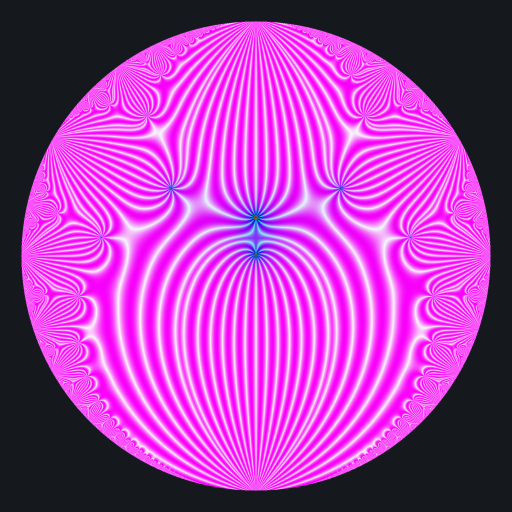
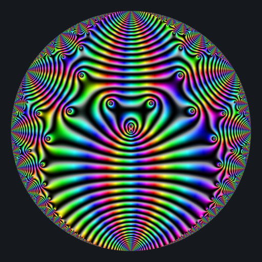

Beautiful complex functions
Posted on June 20, 2022
by Stéphane Laurent
I’ve just submitted a new package to CRAN: jacobi. It allows to evaluate the Jacobi theta functions as well as some related functions. In particular, some Eisenstein series, that you will see below.
To represent a complex function, a color map is needed, that is to say a function which maps each complex number to a color. I’m using two different color maps:
modulo <- function(a, p) {
a - p * ifelse(a > 0, floor(a/p), ceiling(a/p))
}
colormap1 <- function(z){
if(is.infinite(z) || is.nan(z)) return("#000000")
x <- Re(z)
y <- Im(z)
a <- atan2(y, x)
r <- modulo(Mod(z), 1)
g <- abs(modulo(a, 0.5)) * 2
b <- abs(modulo(x*y, 1))
if(is.nan(b)){
return("#000000")
}
rgb(
(1.0 - cos(r-0.5))*8.0,
(1.0 - cos(g-0.5))*8.0,
(1.0 - cos(b-0.5))*8.0,
maxColorValue = 1
)
}
colormap2 <- function(z){
if(is.infinite(z) || is.nan(z)) return("#000000")
arg <- Arg(z)
if(arg < 0) arg <- 2*pi + arg
h <- arg / 2 / pi
s <- sqrt((1 + sin(2*pi*log(1+Mod(z))))/2)
v <- (1 + cos(2*pi*log(1+Mod(z))))/2
hsv(h, s, v)
}Here is the \(E_4\) Eisenstein series:
# background color
bkgcol <- rgb(21, 25, 30, maxColorValue = 255)
f <- Vectorize(function(x, y){
q <- x + 1i*y
if(Mod(q) >= 0.99 || (Im(q) == 0 && Re(q) <= 0)) return(bkgcol)
z <- En(4, q)
colormap1(1/z)
})
x <- y <- seq(-1, 1, len = 2000)
image <- outer(x, y, f)
opar <- par(mar = c(0,0,0,0), bg = bkgcol)
plot(
c(-100, 100), c(-100, 100), type = "n",
xlab = "", ylab = "", axes = FALSE, asp = 1
)
rasterImage(image, -100, -100, 100, 100)
par(opar)
It makes me think to a beetle.
And here is the \(E_6\) Eisenstein series:
f <- Vectorize(function(x, y){
q <- x + 1i*y
if(Mod(q) >= 0.99 || (Im(q) == 0 && Re(q) <= 0)) return(bkgcol)
z <- En(6, q)
colormap2(z)
})